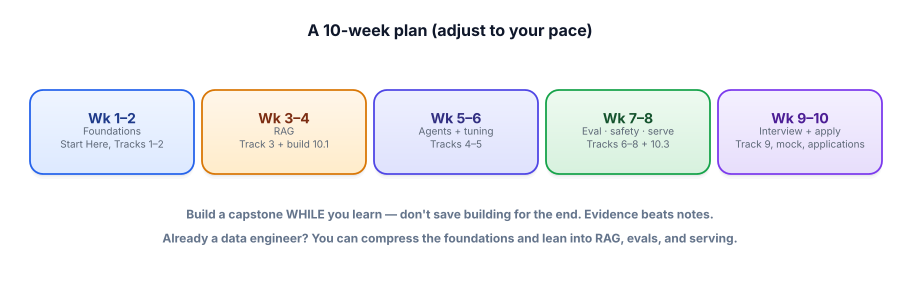

Your study plan
Most people who start a self-paced course don't fail because it is hard. They drift.
Without a schedule, “I'll study GenAI” loses to every busy week.
This plan splits the course into five two-week phases at 6 to 8 hours a week.
Every phase has a build attached, starting in Week 3, so proof grows alongside knowledge.
A 20-minute review each week keeps what you finished from fading.
A study plan is like a training plan for a 10 km race. Nobody gets fit by vowing to “run more”. The plan says Tuesday 5 km easy, Sunday a longer run, a practice race every few weeks, and race day is circled on the calendar.
| In the picture | In the real system |
|---|---|
| Tuesday and Sunday runs on the calendar | Two recurring study blocks, each with a named lesson (“Tuesday, Lesson 3.2, 40 minutes”) |
| Each block of weeks builds on the last | Five phases in order: foundations, RAG, agents, evals and serving, interviews |
| Practice races along the way | A capstone build in Weeks 3–4, 5–6 and 7–8 |
| Race day circled on the calendar | Polish, mock interview and applications in Weeks 9–10, with a deadline |
| The weekly check-in with your coach | A 20-minute review: could I explain this, and use it on the job? |
Where the picture breaks. A runner's fitness shows the moment they run. What you learned doesn't show unless you leave something behind, so every phase here ends in a repo, not just finished lessons.
Slide to the hours you can really give each week. The plan's 60–80 hours stay the same; watch how long each phase and the whole plan take.
Going deeper
A course without a schedule quietly becomes a tab you never close. This lesson turns the whole curriculum into a concrete, week-by-week plan with a build attached to every phase — so you finish, and finish with proof.
Why a plan beats willpower
The single most common way people fail at self-paced learning isn’t difficulty — it’s drift. Without a schedule, “I’ll study GenAI” has no edges, so it loses every negotiation with a busy week. A plan fixes that by making the next action obvious and small: not “learn RAG,” but “Tuesday, Lesson 3.2, 40 minutes.” You stop deciding and start doing.
The plan below assumes roughly 6–8 hours a week for about ten weeks. That’s a realistic part-time pace alongside a job. Go faster or slower freely — the order and the build-as-you-go rule matter far more than the exact dates.

The plan, week by week
| Weeks | Study | Build & checkpoint |
|---|---|---|
| 1–2 | Start Here (0.1–0.5) + Track 1 (How LLMs Work) + Track 2 (Prompt Engineering). | Run every example in Colab. Checkpoint: you can explain tokens, embeddings, and sampling to a friend. |
| 3–4 | Track 3 (RAG & Vector DBs) — the most-tested topic. Don’t rush it. | Build capstone 14.1 (RAG assistant over your own docs) as you go. This is your flagship project. |
| 5–6 | Track 4 (Agents) + Track 5 (Fine-tuning). Understand when not to fine-tune. | Build capstone 14.2 (tool-using agent), or extend 14.1 with an agentic step. Checkpoint: a second repo exists. |
| 7–8 | Track 6 (Evals) + Track 7 (Guardrails) + Track 8 (Serving). | Build capstone 14.3 (eval harness) and point it at 14.1. Add a guardrail and a cost note. This is the senior signal. |
| 9–10 | Track 15 (Interview Bank), then 16.2–16.4 (portfolio, positioning, mock). | Polish repos & READMEs, write your STAR stories, run the mock, start applying. |
If you have years of data/SWE experience, the foundations will move quickly — give Weeks 1–2 a fast pass (a few evenings) and reinvest that time where the market actually concentrates: RAG (Track 3), evals (Track 6), and serving/cost (Track 8). Those lean directly on your pipeline, data-quality, and production instincts, and they’re where you’ll out-interview people who only know how to call an API. Don’t skip the foundations — interviewers probe them — but you can absorb them faster than someone brand new.
Two rules that make it work
Rule 1: build while you learn, not after. The plan deliberately starts your flagship RAG project in Week 3, not Week 10. Knowledge fades; a repo doesn’t. Building as you go also exposes the gaps in your understanding while the lesson is still fresh, and it means that whenever an opportunity appears, you already have something to show.
Rule 2: a weekly 20-minute review. Once a week, skim what you covered and answer the course’s one question — “could I explain this, and could I use it on the job?” Anything that’s a “no” goes to the top of next week. This tiny ritual is what turns a pile of finished lessons into durable, interview-ready knowledge.
- The enemy is drift, not difficulty. A schedule with small, specific next actions is the fix.
- Plan ~10 weeks at 6–8 hrs/week, but the order and build-as-you-go matter more than the dates.
- Start your flagship RAG capstone in Week 3; add the eval harness by Week 8. Evidence grows with knowledge.
- Experienced engineers: compress foundations, invest in RAG, evals, and serving.
- A weekly 20-minute review converts finished lessons into knowledge you can defend in an interview.
This plan gets you hired. If you want to go further — to become one of the best in the field — there's a separate map for that: The Path to Mastery. It's honest about what that actually takes (shipping hard things, not more tutorials), and it's built around the unfair advantage a data engineer already has in GenAI.
Open a calendar right now and write your real plan: pick a start date, block two recurring study sessions per week, and assign the five phases above to dates. Then write one sentence: “My flagship project is ____, and I’ll start it on ____.”
▸ Show a worked example
A filled-in version might read:
“I study Tuesday and Sunday evenings, 90 minutes each, starting March 3. Weeks 1–2 (Mar 3–16): Start Here + Tracks 1–2. Weeks 3–4 (Mar 17–30): Track 3, and I start building my flagship — a RAG assistant over my company’s public help-center docs — on March 19. Weeks 5–6: Tracks 4–5. Weeks 7–8: Tracks 6–8, and I wrap my RAG project with an eval harness. Weeks 9–10: Track 15 + mock interview, and I apply to five roles by April 30.”
Why this works: it has dates (so it survives busy weeks), a named flagship tied to real data you care about (so it’s motivating and demo-able), and an explicit “start building” date in Week 3 (so evidence accumulates). The applications have a deadline too — shipping and applying are part of the plan, not a someday.
You’re tempted to finish all twelve tracks completely before you build anything, so your projects can be “done properly.” Why does this plan push back?
What's the biggest enemy of finishing a self-paced course?
Two evenings a week for ten weeks will take you further than one heroic all-nighter, for reasons that are well understood in learning science. Spacing practice across days lets memory consolidate between sessions, so each return is a small act of retrieval that strengthens recall — the opposite of cramming, which feels productive and evaporates by morning. Short, frequent sessions also keep the project in working memory, so you spend less time each week re-loading where you left off.
There’s a motivational compounding effect too. A plan you can actually keep produces a streak, and a streak produces identity: you stop being “someone trying to learn AI” and become “someone who studies AI on Tuesdays and Sundays.” That identity is what carries you through Week 6 when novelty has worn off. So optimize for a pace you can sustain on a bad week, not your best one — the finish line rewards the tortoise here, every time.
You’ve got a schedule. Now let’s make sure the thing you build along the way actually lands with a hiring manager. Next: the portfolio playbook.
In one line: Put small study blocks on the calendar, build something in every phase, and review once a week.